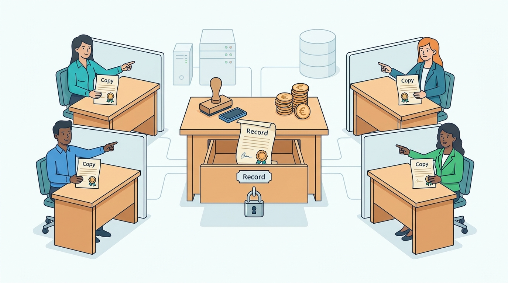

Part I — COMMERCE: What a Commerce Platform Is
Who Owns the Truth: Boundaries, Bounded Contexts and Systems of Record
AI-assisted: researched and written with Claude Code and Codex; illustrations generated with Gemini and OpenAI image tools. How this works
